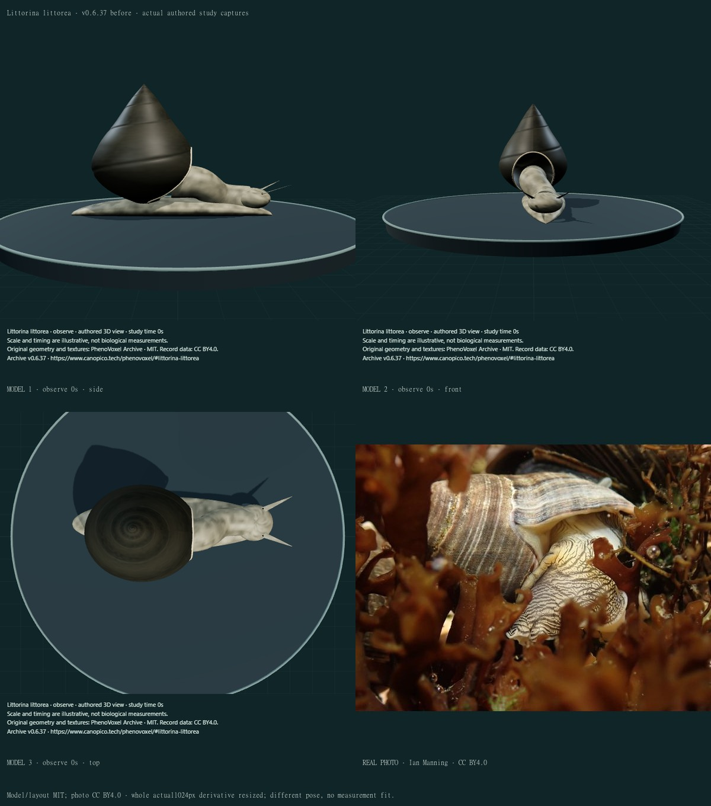
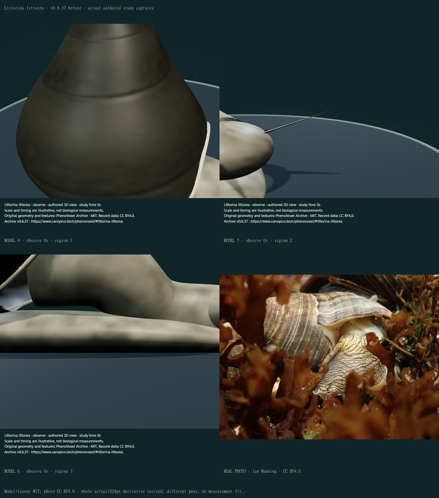
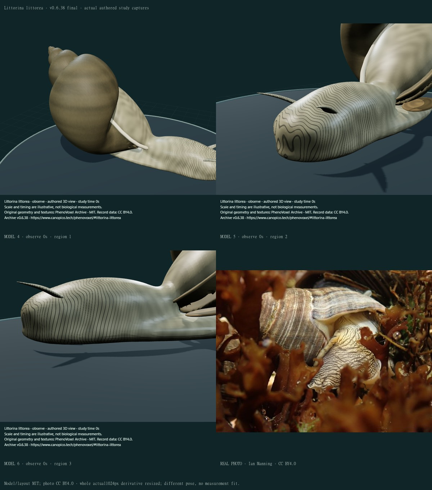
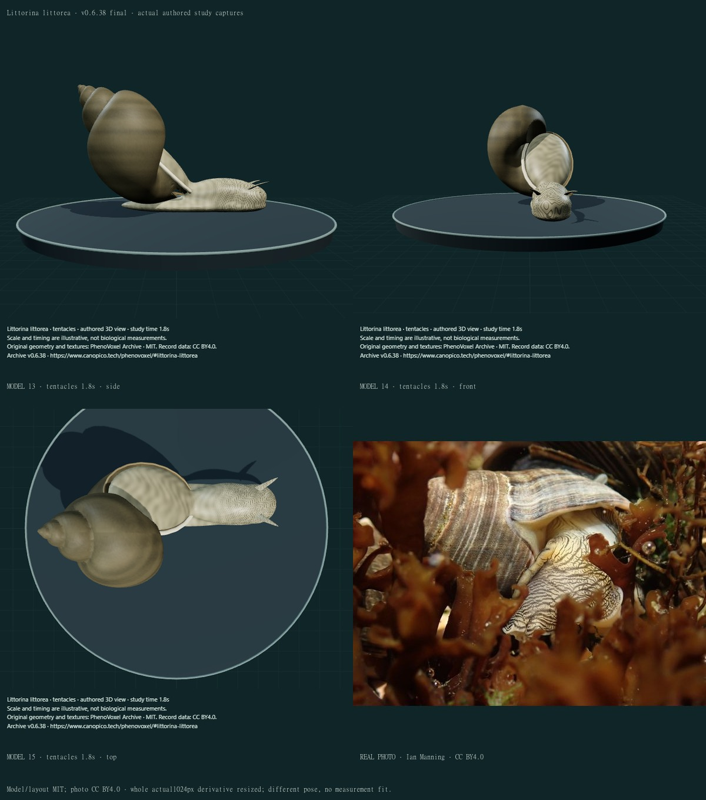
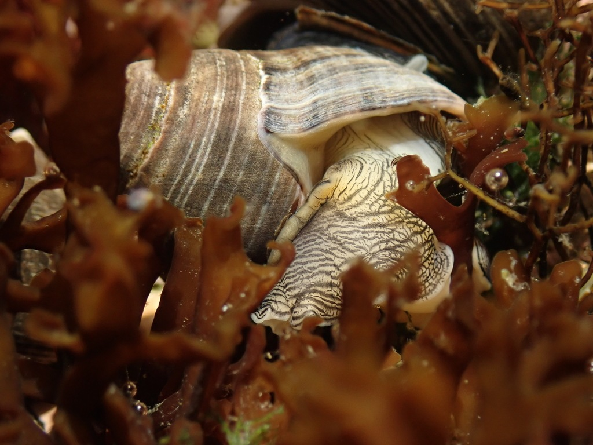

Littorina littorea · adult exterior and local gesture
v0.6.38 · 27 individually inspected final compiled states, six actual public baseline views and eleven credited sheets. One existing record corrected; zero additions.
- Apposed dextral whorl volumes and a limited aperture recess replace the earlier smooth conical envelope. A reflected white columellar lip is distinguished from the brown outer rim.
- A closed connected external head-foot-mantle replaces separate head/neck/foot primitives. The selected sole supports the display body; shell carriage and collar insertion remain unfitted.
- Two closed flattened cephalic tentacles have attached transverse bands and small basal eyes. They retain the periwinkle form rather than Lymnaea triangular feelers or four land-snail stalks.
- A selected posterior corneous opercular exterior is included, with its incomplete attachment and closure explicitly disclosed. Original numerical pigment remains artwork, not a photographic skin scan.
- The existing local tentacle study is finite, returns to neutral and holds. The archive does not call it crawling, feeding or physiological retraction.
- A separately licensed extended-body photograph adds a useful comparison with the retained withdrawn-animal profile image. Exact derivative and delivery hashes are recorded.
This remains a partly stylized, unmeasured adult exterior. Whorl shape/apposition, the selected 5.5 turns and 0.8-radian oblique axis, aperture and mantle insertion, shell thickness, snout, foot outline, basal eyes and posterior opercular attachment are authored choices, not a specimen fit. The apertural recess is limited; a complete internal columella, pallial organs, opercular seal and physiological retraction are absent. The selected pigment and bands omit much natural wear, epibionts and individual variation, and do not calibrate tissue scattering or wet-shell optics. Basal eyes and the partly concealed operculum need further anatomical work. The same body performs only one finite local tentacle gesture; crawling, pedal waves, stationary interwaves, mucus/traction, grazing, respiration, contact forces and physiology remain unfinished. The extended photograph has an oblique seaweed pose and partly occluded feelers; it does not validate the selected level support or a gait. Compatibility/export omits fine main-shader bands. No measured accuracy percentage, independent specialist validation or completed photorealism is claimed.
Before · v0.6.37 · 1

Real photo: Ian Manning, CC BY 4.0. Whole actual 1024 × 768 derivative resized; original-resolution bytes were not retrieved. Model/layout MIT.
Before · v0.6.37 · 2

Real photo: Ian Manning, CC BY 4.0. Whole actual 1024 × 768 derivative resized; original-resolution bytes were not retrieved. Model/layout MIT.
Final comparison 1
Real photo: Ian Manning, CC BY 4.0. Whole actual 1024 × 768 derivative resized; original-resolution bytes were not retrieved. Model/layout MIT.
Final comparison 2

Real photo: Ian Manning, CC BY 4.0. Whole actual 1024 × 768 derivative resized; original-resolution bytes were not retrieved. Model/layout MIT.
Final comparison 3
Real photo: Ian Manning, CC BY 4.0. Whole actual 1024 × 768 derivative resized; original-resolution bytes were not retrieved. Model/layout MIT.
Final comparison 4
Real photo: Ian Manning, CC BY 4.0. Whole actual 1024 × 768 derivative resized; original-resolution bytes were not retrieved. Model/layout MIT.
Final comparison 5

Real photo: Ian Manning, CC BY 4.0. Whole actual 1024 × 768 derivative resized; original-resolution bytes were not retrieved. Model/layout MIT.
Final comparison 6
Real photo: Ian Manning, CC BY 4.0. Whole actual 1024 × 768 derivative resized; original-resolution bytes were not retrieved. Model/layout MIT.
Final comparison 7
Real photo: Ian Manning, CC BY 4.0. Whole actual 1024 × 768 derivative resized; original-resolution bytes were not retrieved. Model/layout MIT.
Final comparison 8
Real photo: Ian Manning, CC BY 4.0. Whole actual 1024 × 768 derivative resized; original-resolution bytes were not retrieved. Model/layout MIT.
Final comparison 9
Real photo: Ian Manning, CC BY 4.0. Whole actual 1024 × 768 derivative resized; original-resolution bytes were not retrieved. Model/layout MIT.
Two reference scopes
Ian Manning’s extended body shows banded head tissue among seaweed, with partly concealed shortened feelers. The source is a community nominal species identification, not a new specialist determination. The actual photo API grants CC BY; the official application’s license mapping specifies version 4.0. The human photo page’s verification interstitial was not bypassed.

Guttorm Flatabø’s retained withdrawn animal is CC BY-SA 3.0. It shows white columellar lip and operculum; its generic caption and Commons category do not independently determine the extended body or gait.

Biological evidence
- Naturalis · Macrobenthos of the North Sea · Littorina littorea
Actual descriptive text read: solid slightly tumid shallow-sutured whorls, ear-shaped aperture, thick reflected inner lip, white columella, no umbilicus, variable spiral pigment and broad flattened transversely striped cephalic tentacles. Descriptions vary across specimens; no dimensions fitted to this model.
- Smithsonian SERC NEMESIS · common periwinkle
Selected actual species-account morphology/distribution text read in saved evidence preparation, not a collection determination. Heavy turbinate shell, shallow whorls, white columella and variable pigment; its stated whorl count is not a universal geometry. The NC-licensed account image is not redistributed. Recorded introductions and native distribution are distinguished.
- Moisez and Seuront 2020 · laboratory movement and orientation
Actual author-hosted primary PDF, printed page3 Figure1 and page5 Figures3/4 plus selected methods inspected privately. Apparatus and whole-animal tracks, not foot-wave or tentacle kinematics. White marks are nail polish, not natural pigment. No fitted controller, universal orientation rule or paper figure redistribution; publisher page403, author-hosted copy scope recorded.
- Ian Manning · extended common periwinkle reference · CC BY4.0
Whole authentic photo120125481 inspected at the actual downloaded1024x768 derivative. Banded extended head and shell amid seaweed, with partly occluded/shortened cephalic feelers; no complete gait/sole/opercular view. Community nominal species identification, not independent specialist redetermination. Exact photo API grant cc-by and download/delivery hashes recorded; original-resolution retrieval timed out and is not claimed.
The primary 2020 figures concern aquarium apparatus and whole-animal tracks. White animal markers are nail polish. No foot-wave kinematics, forces or fitted controller were obtained from them; paper figures remain private.
The first candidate used exposed swept surfaces that separated visibly into a corkscrew and left an empty upper aperture. Those views were rejected. A closed implicit union now apposes selected whorl volumes with a limited aperture recess. Later candidates had high upright carriage, oversized close-up cameras and an overhanging anterior head; oblique carriage, a refitted collar, broader anterior sole and region-specific framing were revised after actual views. Initial generator/revision checks retained the wrong old species epithet; that mapping was corrected. A later sentence-format expectation and the old open-sheet 80-edge topology expectation were repaired without discarding support/reset/hash checks: the new closed shell must be connected, and a direct ray check must confirm the recessed aperture rather than a solid end cap. Private drafts are excluded from final screenshot counts.
Connected closed surfaces, actual aperture recession, sole support, finite local action/reset, retained geometry/materials and reproducible byte hashes are software properties, not biological validation.
Detailed findings, source access and limitations · Numerical surface and photograph checksums · Published software checks
307 public records; 243 remain to 550. Remaining Mollusca realism, 45 large-animal nominations and unfinished mechanisms continue.